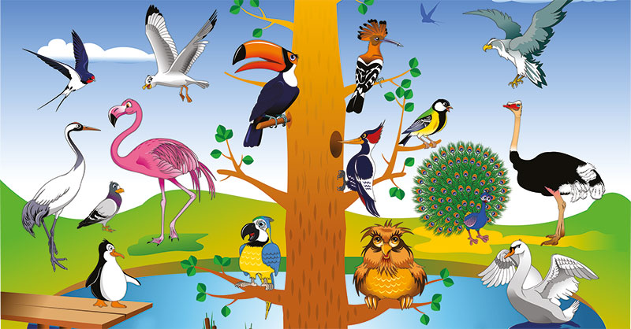

¿QUE SON LAS AVES?
Las aves son animales vertebrados, de sangre caliente, que caminan, saltan o se mantienen solo sobre las extremidades posteriores,mientras que las extremidades anteriores han evolucionado hasta convertirse en alas que, al igual que muchas otras características anatómicas únicas, les permiten, en la mayoría de los casos, volar, si bien no todas vuelan. Tienen el cuerpo cubierto de plumas y, las aves sensu stricto, un pico córneo sin dientes. Para reproducirse ponen huevos que incuban hasta su eclosión.
